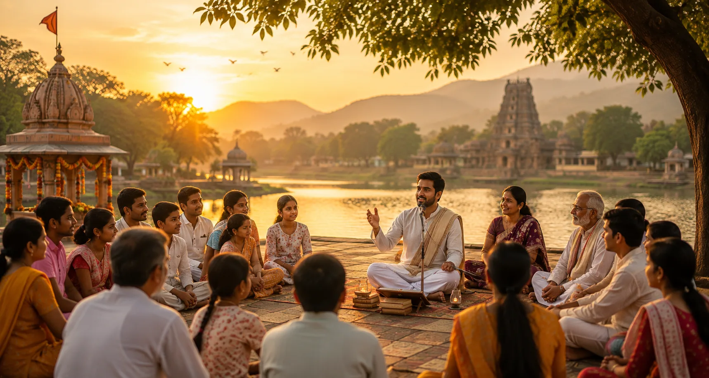
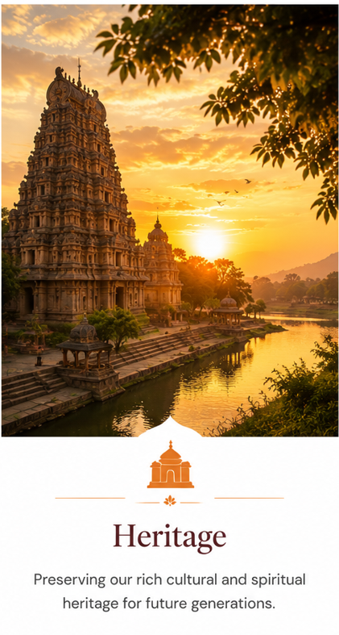
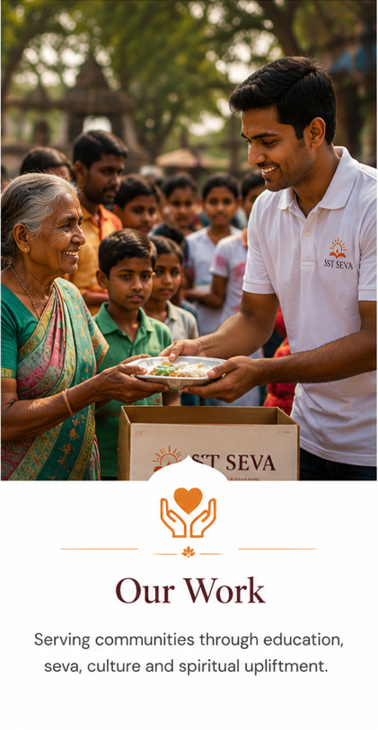
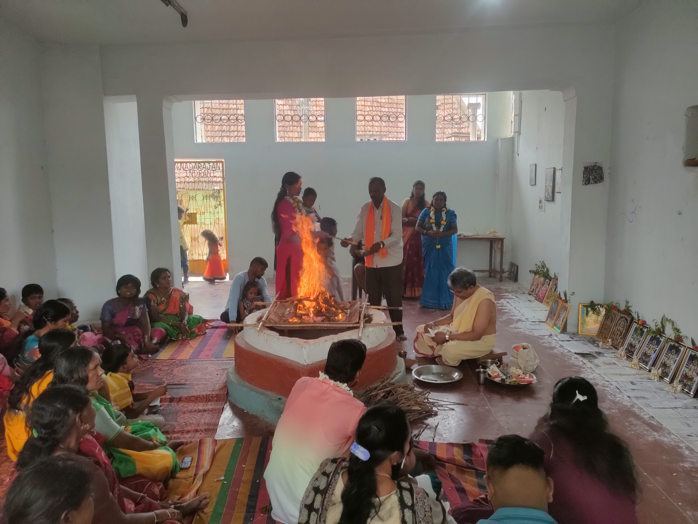
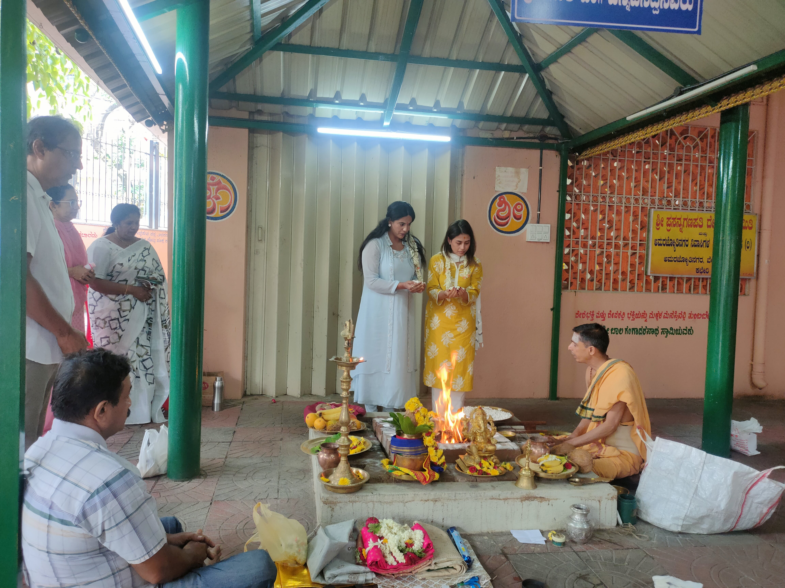
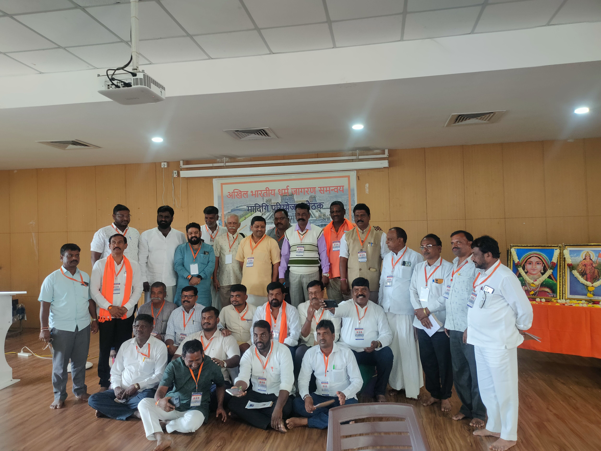

Education
Supporting learning opportunities for underprivileged children and communities.
Support this workWorking with communities to uphold Bharatiya values while creating opportunities for education, healthcare, nutrition, training and social upliftment.
Samskruthi Samvardhana Trust was established in 2020 with a commitment to promote Sanatana Bharatiya values and work towards the upliftment of underprivileged communities.
Our initiatives span healthcare, nutrition, education, training and skill development. Through community participation and volunteer-led programmes, we seek to strengthen inclusion, equality and mutual respect.
Explore our work
Our weekly satsang gatherings create a simple, welcoming space for people to come together, reflect on Bharatiya values, share traditions and strengthen bonds within the community.
With nearly 800 weekly satsang gatherings across Karnataka, this grassroots network is an important part of our effort to nurture samskruthi, social harmony and a spirit of seva.
Through satsang and community gatherings, we celebrate the birthdays and jayanthis of great personalities whose lives continue to inspire service, dignity, devotion, courage and social harmony.

SST conducts workshops for purohits and temple trustees, along with intensive 3-day to 7-day camps for upcoming purohits.
Community-led initiatives designed around service, participation and lasting positive change.
Like our weekly community work, every initiative begins with people. Your support helps us create opportunities for service, learning, wellbeing and cultural participation.
Supporting learning opportunities for underprivileged children and communities.
Support this workMedical camps and community health initiatives delivered with care and dignity.
Support this workPractical nutritional support for women, children and communities in need.
Support this workTraining and skill development that helps people move towards greater self-reliance.
Support this workCreating spaces for inclusion, equality, mutual respect and shared values.
Support this workCultural committees and activities that strengthen Bharatiya heritage and participation.
Support this workFinancial support is one way to contribute. Time, skills and participation matter too.
Support community initiatives and help sustain grassroots seva.
Make a donationBring your time, skills and energy to community activities.
Get in touchWork with us to take meaningful programmes to more communities.
Partner with us
More than 250 cultural committees have been facilitated and over 500 community events organized, including initiatives focused on participation, access, national commemorations and social awareness.
Real moments from community activities, cultural programmes and volunteer-led initiatives.

Weekly satsang
Archaka training shibhir
Volunteers in actionHelp sustain community initiatives, educational support, healthcare camps and volunteer-led programmes.
Donate Now Secure payments powered by Razorpay